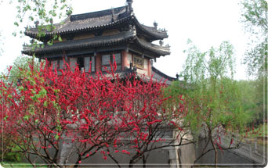

伴着春暖花开季节的到来，无锡三国城一年一度的春季大型活动“狮王争霸赛”即将于3月下旬重燃战火。惊险、刺激、霸气，广东佛山醒狮邀你共赏一场视觉的饕餮盛宴。
三国城吴王宫广场来自一代武术宗师黄飞鸿故里（佛山）的龙狮武术团将为你带来一场精彩翻倍的醒狮表演。<<<查看详情
活动时间：3月26日—5月2日，每天上午10：40 和 下午15：00
具体以景区公告为准！
无锡影视基地始建于1987年，占地面积近100公顷，可使用太湖水面200公顷。当年中央电视台按照“以戏带建”的方针，为拍摄电视连续剧《唐明皇》、《三国演义》和《水浒传》，相继建成了唐城、三国城、水浒城三大景区。
无锡影视基地拥有大规模的古典建筑群体，三国城内的建筑雄浑刚劲；水浒城内的建筑工巧华丽；唐城内的建筑金碧辉煌。另外还有“老北京四合院”、“老上海一条街”等明清风格的建筑景观。
丰富多彩的演出节目是无锡影视基地的旅游亮点，这里每天有10多场马戏、歌舞、影视特技类的节目连续上演。
作为中国著名的影视拍摄基地，这里已经接待了250多部海内外影视剧的拍摄。【景区官网】
“无锡火车站(南广场)”下车的游客：
可以到“东广场公交站”乘坐公交82路即可到达。
“无锡中央车站”下车的游客：
可以到“公交站A岛”乘坐1路、11路、203路，或者“公交B岛”乘坐30路、77路到“火车站(东)”下车，转乘82路即可到达。
“无锡汽车客运站”下车的游客：
可以到“公交C岛”乘坐60路、712路到“火车站(东)”下车，转乘82路即可到达。
百度地图示意

自组团
三三设计、三三收客、三三导游上门接送
往返机场上门接送直营门店
直营门店值得信赖方便快捷
门店遍布苏州县市维护权益
关注客户心声